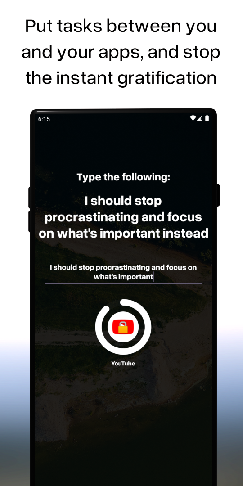

Programming
I've been programming personal projects since I was a kid, and probably will never stop.
I've worked with a long list of technologies, for desktop apps (C#, .NET, WPF), webdev (typescript, javascript, Node, webpack, webRTC, WASM, CSS, Riot, Blazor, GO), mobile app development (kotlin, xamarin), and games and graphics programming (Unity, Godot, GLSL/HLSL, Haxe, Flash), alongside others.
For projects and details about them, take a look at my tech blog.
Here's a short list of some recent projects.
Flowgrammer
Flowgrammer (name likely to change) is a prototype visual scripting language aimed at teaching children and adults programming concepts.
Drag and drop scripting "blocks" and connect them together to create small procedures and methods.
It's connected to a small 2D physics engine (using matter.js), which users can control via the scripts they build.
Flowgrammer was made entirely over the course of 12 days in April 2024 using node, typescript, riot.js and webpack.
This prototype is now put on the back burner, but I'll be picking it back up and adding to it when I have enough free time to do so.
Above is a quick video showing some of the basic functionality. You can test the pre-alpha version here (desktop browsers only - no mobile support yet).
Thumb Blocker Launcher
Thumb Blocker Launcher is an Android home screen launcher app that aims to stop phone addiction
Small tasks and "delayers" are set by the user in order to make opening addictive apps more difficult and more of a chore.
Thumb Blocker Launcher is developed using Kotlin and Android Studio. It is currently in beta on Google Play.
Dash Foss
I made a lightweight third party tumblr dashboard android application called "Dash Foss". Its written in C# using Xamarin, and uses the official tumblr API to show posts, videos, comments, etc. You can view your timeline, other people's blogs and posts you've liked. It does not show ads, recommended posts, blazed posts, tipping, or other negative feaures built into the first party app.
Counter-Strike Demo Viewer
I made website to view Counter-Strike replay files in 2D. The main logic was written in Go, and the front-end uses Riot.js
For more details, check out the blogpost I made about the project
Visualisations
For personal projects, I've made procedurally generated visual programs. These have written in with GLSL, Unity, Processing, and other frameworks
The below video is from a series of experiments I did on "slime based dithering". Looks best at 1080p.